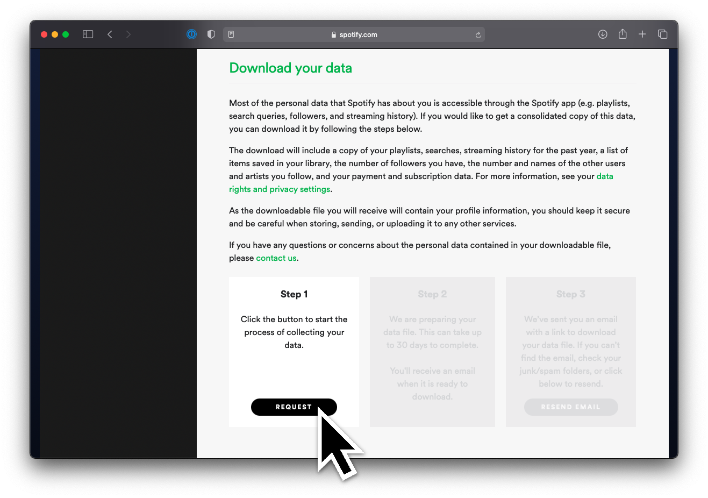
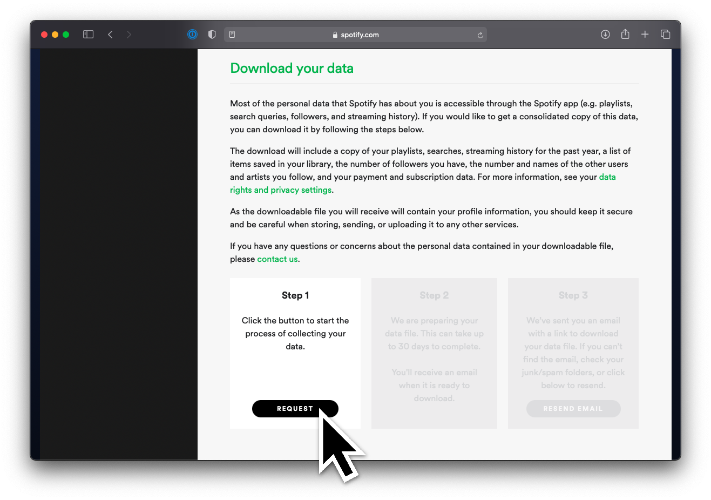
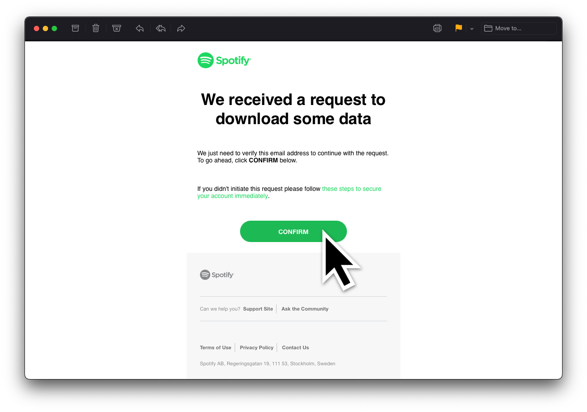
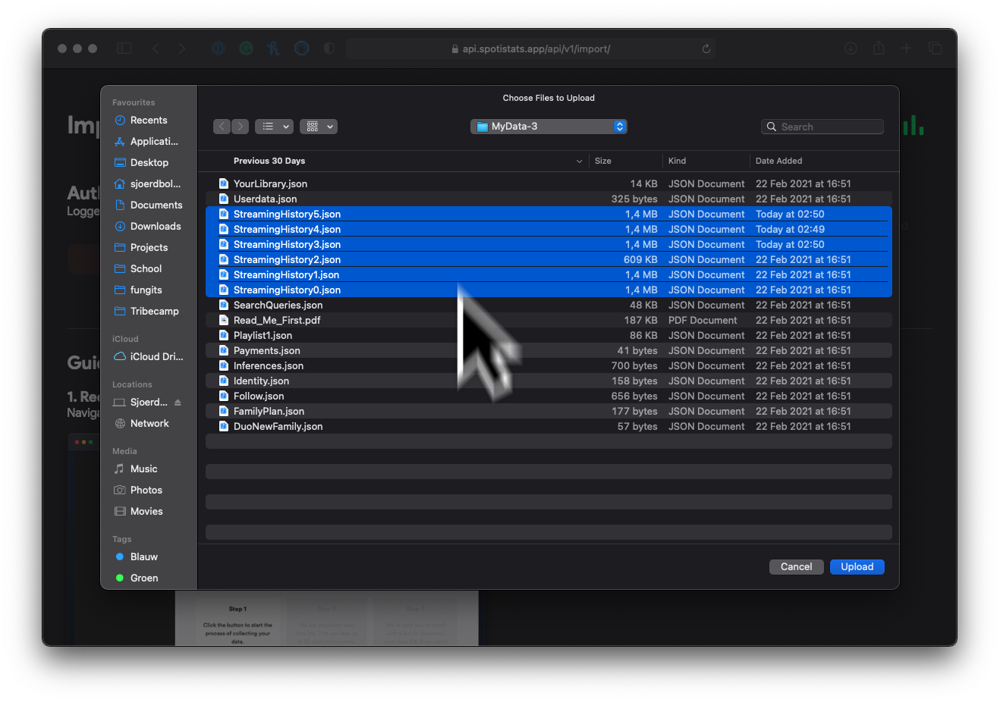
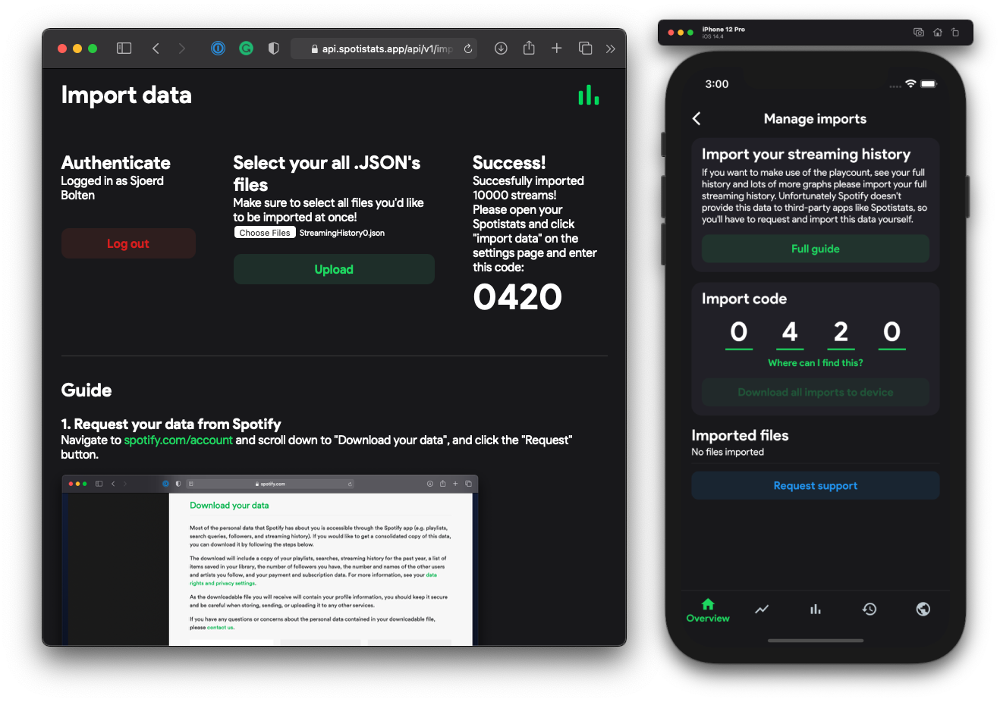
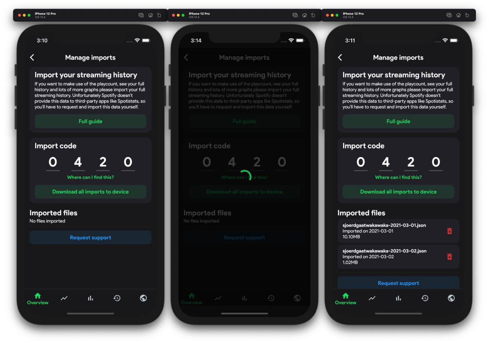

1. Request your data from Spotify
Navigate to spotify.com/account/privacy (make sure your on the privacy tab) and scroll down to "Download your data". Then, click the "Request" button.
Please open your Spotistats and click "import data" on the settings page and enter this code:
Navigate to spotify.com/account/privacy (make sure your on the privacy tab) and scroll down to "Download your data". Then, click the "Request" button.
To continue with downloading your data you must confirm the request. Head over to your mail and click the big "confirm" button.
As Spotify states:
We are preparing your data file. This can take up to 30 days to complete.
You'll receive an email when it is ready to download.
But in 99% of the cases, you'll recveive the data within ±3 days.
Once Spotify has send you your data, your data will be in a .ZIP file. This includes a lot of personal information which you should never share with others. How to extract a .ZIP file
When you have your .JSON files ready, head over to spotistats.app/import and login with your Spotify account. Next click the "Choose files" button. Next select all files starting with StreamingHistory (hold shift to select multiple files)
For extra security, you'll need to enter your 4 digit import code in the app. Go to Spotistats > settings > manage imports and fill in the code.
The last step is to download your imported files onto your device. Simply click "Download all imports to device" and wait a couple seconds while the app downloads them.
Congratulations! You can now view your full listening history, playcount and more. Note that this will only include the data you've imported yourselves. If you want to update this data, start again at step 1 :)